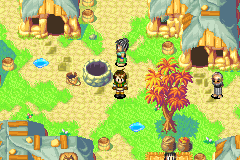
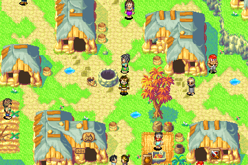
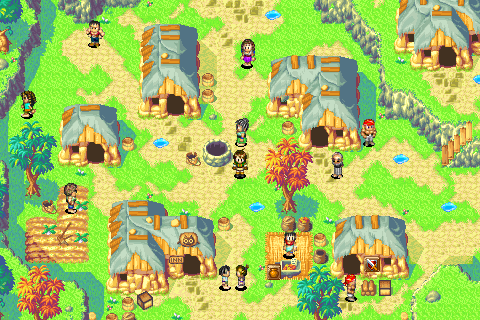

Exploration
- Walking speedChoose Normal, 1.5×, 2× or 3×. The Broken Seal keeps the original pace during the Colosso trials.In-game Settings → page 2
- EncountersSet random encounters to Normal, Half, Off or Double.In-game Settings → page 2
- Message speedSet how fast dialogue appears, or choose Instant.In-game Settings → page 1
- No slowdownReduce the original game's slowdown during play.In-game Settings → page 2
- Djinn TrackerSee your Djinn by element. Hover over a missing one for a hint.Launcher settings or F1 → Game
- Treasure TrackerTracks collected treasure and opens to your current area.Launcher settings or F1 → Game
Better Field Psynergy
In-game Settings → page 2 → Faster Psynergy. Off by default.
- RevealReveal covers the whole screen in any view size. You can walk twice as far from where you cast it. The timer stays the same.
- RetreatPick a visited town from the world map. Travel costs 6 PP. Cancel for free. In The Lost Age, your ship comes along where applicable. In dungeons, Retreat takes you to the entrance.
- Move and other field castsField casts run at 2× speed, including Move in both games and Cyclone, Tremor and Grind in The Lost Age. The game returns to normal speed after the cast.
Battles & cheats
- Hard ModeEnemies have 1.5× HP and 1.25× Attack and Defence. Your choice is remembered per save.New game or in-game Settings → page 1
- 2× battle speedToggle faster battles with the game's Select button while fighting.
- Custom Battle ModeAt the Battle Arena receptionist, pick unlocked monsters or bosses, set how many to fight, and choose whether to match your party's strength.Battle Arena · on by default, with a switch in launcher settings
- Enemy HP barsSee an enemy's remaining HP as a red bar and a number when choosing a target.F1 → Game · off by default
- CheatsInfinite HP and PP, plus multipliers for XP, coins and item drops.F1 → Cheats or F11
Picture
- Original, Wide and Extra WideSee more of rooms, the world map and battles in Wide or Extra Wide. Original uses the GBA view.In-game Settings → page 2 → View size · Compare the views
- Window and displaySet window size, fullscreen, aspect ratio, sharp pixels and V-Sync. Aspect options include original 3:2, 4:3, 16:10, 16:9, Window and Pixel-perfect fit.F1 → Video
- Colour profilesChoose from presets such as Raw, Handheld, Natural and Warm, or set your own saturation, hue, brightness, warmth and darkening. Colour vision options are available too.F1 → Video → Colours
- Screen filters and flicker reductionTry LCD3x, CRT Lottes, xBR or ScaleFX with OpenGL, or soften rapid GBA-style flashing with Flicker reduction.F1 → Video → Effects
- David's OG GBA ColoursA preset based on David's original GBA colour settings.F1 → Video → Colours
Same scene, three view sizes
A town in The Lost Age.



Sound & music
- Volume and muteAdjust game volume or mute the sound. You can also mute audio only while fast-forwarding.F1 → Audio and Speed
- Music modsReplace the soundtrack with looping FLAC recordings. Use Juste-D's remasters or make your own pack.Launcher settings or F1 → Audio · Music mod setup
- Track swapsSearch for an area and choose its music. Set battle tracks separately, randomize individual choices or shuffle music across the game.F1 → Music
Controls & speed
- Keyboard and controllerRebind game buttons and hotkeys. Use the Controller and Alternate columns to bind movement to the D-pad and stick. Bindings are shared by both games.F1 → Controls and Hotkeys
- Fast forwardHold Tab to fast-forward. Set a speed cap, leave it uncapped, or bind a toggle.F1 → Speed and Hotkeys
- Auto fire, pause and resetUse auto fire for A or B, pause with Shift+P, or bind Soft Reset to return to the title screen. The FPS counter is available with F.F1 → Hotkeys
- Settings overlayOpen settings with F1. Use the mouse, keyboard or controller, and drag the menu to move or resize it.
- Confirm before quittingShow a confirmation before quitting. Each game remembers its own setting.F1 → Game
Saves & transfer
- SavestatesNine slots that save the game exactly where you are.Save with Shift+F2–F10 · load with F2–F10
- Seamless modeFinish The Broken Seal, choose a Clear Data slot and continue into The Lost Age with your team.Launcher settings
- Import Clear DataStart The Lost Age with your Broken Seal team, Djinn, items and story progress. You can also update an existing Lost Age slot before the reunion. The update keeps a backup.New Lost Age game or F1 → Game → Update from The Broken Seal
- Language savesEach language has its own saves. After preparing a new language, the launcher can copy an English in-game save into it. Savestates stay with their original language.
Launcher & reporting
- One launcher for both native PC gamesRuns on Windows and Linux, including Steam Deck. Pick a game and supply your own matching ROM. The launcher prepares it on your PC and remembers the file.Getting started
- Five languagesChoose English, Spanish, Italian, French or German for each game.Flags below the cartridges in the launcher
- Update checksThe launcher tells you when a new version is available.Downloads and release notes
- Bug reportsPress F12 to capture the last two seconds. Close the game to review and send the report. You can also turn on crash logging.F12 · F1 → Help for crash logging
- Skip the ROM checkTry a modified game file by turning off the file check. The official game files are the supported versions.Launcher settings
- Use fewer system resourcesLimit CPU and memory use while the launcher prepares a game. Preparation may take longer.Launcher → Build or Rebuild